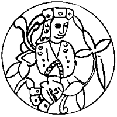

Sabah oldu. Benim gözlerime uyku girmedi. Budunu, kendimi, çocukları, nereye gideceğimizi düşündüm. Burada Sarkel’de çok kalamazdık. Doğu’ya, İdil’e gitmeliydik. Şimdi Sarkel’in çevresindeki ele haberler uçmuştur. Bazı obalara yanar od düşmüş, düştüğü yeri yakmış, yandırmıştır. Nice analar “baban yarın gelir” diye bebeleri kandırmıştır. Daha kötüsü Urus Koca eli vurmuş, çapmıştır. Tazesini tutmuş, kocasını kırmıştır. Eller ya dağılmış, ya dağılmaktadır. El olmadan kent olur mu? Kentin dirliği el ile. Sarkel, ölü doğan kağanlığımın başkenti! Sarkel, kolu budu kırık el!
Selcük uyanıyor. Tatlı tatlı esniyor. “Bugün büyük gün Kağan!” diyor. Mel mel bakıyorum. Benim bir büyük gün daha yaşayacak durumum mu var? Bugün Tanrı’nın unuttuğu hangi koca, kimle bağlaşarak saldıracak? Selcük hiç oralarda değil. Sesi mutluluktan çın çın ötüyor:
“Bugün hatun oluyorum.”
“Selcük, sen zaten neydin ki” diyorum iyice salaklaşarak. “Bana bak Tengere Kağan! Anlamazlıktan gelme. Ben bugün ‘hatun’ oluyorum. İşte o kadar! Ben Abınçu muyum, kırnak mıyım, karavaş mıyım canım? Bugüne bugün, koskoca Demir Yaylı Tuğak’ın tek kızıyım! Neyin oluyorum ben senin de yatağıma giriyorsun? A utanmaz!”
“Selcük elimi eline değdirdiğim yok. Şurada kıvrılıp yatıyoruz!”
“O da senin sıkıntın. Kule’den yeni çıktın, yorgunsun diye bir şey demiyorum. Ama böyle sürerse bakıcılara, bahşılara baktırırız.”
“Ama Selcük ben gerçekten anl...”
“Anlamayacak bir şey yok! Bugün Başrav Yaşıl Kır bizi evlendiriyor. Hatun oluyorum!”
“Selcük! Tabii, tabii de... Nereden çıktı bu?”
Ellerini yüzüne kapatıyor, mavi ala gözlerinden iki damla parmaklarının arasından taşıyor.
“Dün bir ordu kişinin önünde söylerken iyiydi, değil mi? Boğazını üçüncü kez sıktıklarında ‘Evet! Evet!’ derken? Demek usun başına gelince yan çiziyorsun!”
Hiçbir şey hatırlamıyordum. Boğazımı mı sıkmışlardı bu iş için? Olabilir tabii. Kişi o haldeyken bir şey hatırlamıyor. Selcük’ün dileğini kırmamış, Töre’yi biraz esnetmiş olabilirler. Utançla karışık:
“Alnınım yazısı, bağrımın sızısı, bulut gözlüm, Selcük, adı görklüm, tabii evet. Evet de bu yanık yıkık kent içinde... Bilmem ki?”
“Kağan ben bugün hatun oluyorum! Yengelere söyledim, hazırlıklar başladı bile.”
“Şey, Selcük! Bir de şey var, Arsılan! Hah Arsılan, boyun kadar çocuk, yani ele güne karşı...”
Kızacağını düşünüyordum, yanıldım. Tuhaf şey şu kadınlar. Küçük bir kahkaha attı:
“Hah... hah... En iyi tarafı o zaten, bugünlerde bozkırda pek bi yaygın, önce çocuk sonra düğün!”
“Yaa!”
“Yaa! Kağan, sen Güç Kulesi’ndeyken çok şey değişti, çok!”
Günün kalanı nasıl geçti, toparlayıp anlatabilir miyim bilmiyorum. Sabah Selcük’le bu konuşmayı yaptıktan sonra Hazar ve Kınık yiğitleri beni evden apardılar. Önce saçlarım kazındı, önüme aklı karalı saçlar düştü, güveyi tıraşı oldum, yastan kurtuldum. Sonra Sarkel’in kermenindeki Han Hamamı’nda bir güzel ovuldum. Hayatımda ilk kez hamam dedikleri yeri gördüm. Her tarafıma kokular, yağlar sürdüler, çiçek bahçesine döndüm.
Daha hamamda iken kımızın dibine vurduk. O kadar içtim, o kadar içtim ki, bizimle içen tüm Urus yoldaşlarım yıkıldıklarında ben hâlâ içiyordum. Kağan olarak ilk işim, bu kafayla, “kulları karavaştan koyverin, giden gitsin, kalan öz başına bey olsun, hanım olsun, öyle kalsın” kararını vermek oldu. Bu, içki arkadaşlarıma öyle gülünç geldi ki, katıla katıla güldüler.
Kapımız halılar ile kapalı, sırtımız kente dönük, yanık Sarkel’e bir kez bile bakmaksızın, kermenin duvarları dibinde yatan yüzlerce ölüyü uslarımıza sokmaksızın, deliler gibi yedik içtik. Tek tek erler, kızlar, ağırbaşlı hatun analar, genç gelinler ve onların sütünden içen bebeler değil, tümden esridi budun, tek bir varlık gibi. Yerlere dökülen, saçılan, saçı olan kımızlardan içen tavukların, kazların öyle bir yanpiri yanpiri yürüyüşleri vardı ki görmeye değerdi.
Yaşayan tüm Sarkel geniş bir halka olmuş dönüyor, oynuyor gibiydi. Daha dün erini yitirmiş, yanağı yırtık Hazar tazeleri, Kınık’ın taze koçyiğitleri ile kol kola oynuyor, yüzlerinde gülücükler açıyordu. Bastonlarına dayanarak oynayan kocalar dirilmiş, cana gelmişti. Kolca kopuzlar inliyor, Hazar kocaları dinliyor, ortalık tulum sesinden, davul gümbürtüsünden yıkılıyordu. Kazanmıştık. Kazanmıştık.
Sonra ben Tengere Tardu Kağan, Aktürklerin ve Köktürklerin kağanı, altın levhaları sökülerek yalnız tahtası kalmış altın tahtımdan örü durdum. Selcük yanı başımdaki gümüşleri sökülmüş gümüş tahtta, kınalı bir kuş gibi oturuyordu. Hiç yarışsız düğün olur mu?
“Yarışlar başlasın” dedim. Kızılca kıyamet bir alkış koptu. Kımızla başı hoş, çakırla sarhoş, kimi dolu kimi boş yiğitler, önce kabağa ok attılar. Nice sonra, keskin bakışlı bir Kınık delikanlısı direkte kabak olmadığını fark etti. Bütün alan gülüşmelerle inledi. Bugün hiçbir terslik benim budunumu yıldıramıyordu. Babasının arslan oğlu Arsılan Tigin, ediklerini çıkardı, su içtiğimiz gerçek bir susak elinde, yerinden fırladı. İki dakika sonra, maymun gibi direğin tepesine tırmanmış, kabağı asmış, iniyordu. Alan alkıştan çınladı.
Benim, yaşlı Tengere’nin bile, kanım kaynadı. Ak boz bir Kınık atına bindim, bir iki döndüm, başım hoştu, kolanı iyi sıkılmamış eyer döndü, ben kaydım, atın karnına doğru düştüm. Şimdi eyer atın karnında, bacaklarım atın sırtındaydı. Atın gövdesini sıkı sıkıya kavradım, kenetledim bacaklarımı, sonra bir boşluğuna getirdim, Güç Kulesi’nde kendi ellerimle yaptığım yayımı çektim, kirişi bıraktım. Kabak parça parça alana yağdı. Kınık yiğitleri atı durdurduklarında bacaklarım çözüldü, kendimi yere bıraktım, bacaklarım kasılmış, kasnak olmuştu. Sırtım, yepyeni kaftanım toza bulandı battı. Selcük Aka’mın yüzünde beğenen bakışlar vardı.
Sonra alan “güreş güreş” diye inlemeye başladı. Bir kağan olarak, güreşe çıkmadım tabii. Akçem yoktu, çıkıp güreş tutuşan yiğitlere, nasılsa yağmadan kurtulmuş altınlı bir kaftanı pençelerimle ince ince yırtarak ödül ettim, verdim.
“Elinde bu kaftandan bir parça olan yiğidin yedi göbek torunlarına, benim de yedi göbek torunlarım saygı göstersin” dedim. Ağzımdan bu söz nasıl çıktı, ben de şaşırdım. Hani yeni bir hanedan kurmayacaktım? Hani biz “Tengereli” olmayacaktık? Arsılan’ın yüzünde geniş bir gülümseme gördüm.
Bunlar olurken pek kötü acıkmıştık. Buyurdum. Evlerde bulunan her türlü yiyecek büyük kazanlarda kürekler, külünkler ile karıştırılarak pişirilmeye başladı.
Güzel kokulardan yerde bizim, gökte meleklerin başı dönüyordu. Hazar’da bay kalmadığı için yoksul yoksulla bu aşı paylaşıyor, dudaklarından taşıra taşıra yiyordu. Evet, Sarkel’in özü, çekirdeği, yüreği, ölümü yenmişti. Bunu kutluyordu. Kazanmıştık. Kazanmıştık. Ya da tufan olmuştu, biz Tengere Nuh Kağan önderliğinde gemiyi dağlara oturtmuştuk, şimdi yemeğimizi yiyor, yaşamı kutluyorduk.